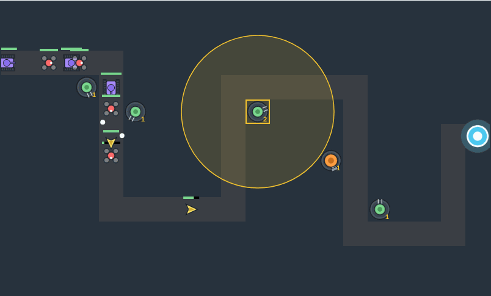
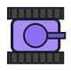

Sobre o jogo
Defensores do Núcleo é um jogo de estratégia do tipo tower defense. Em uma fábrica automatizada, robôs invasores entram pela esquerda e seguem a esteira até o Núcleo de energia, à direita. O jogador precisa construir torres ao redor da esteira para destruir os invasores antes que eles cheguem lá.
O jogo tem 10 ondas de inimigos, cada uma mais forte que a anterior. Entre as ondas o jogador usa o dinheiro ganho para construir novas torres, evoluir as que já tem ou vender as que estão mal posicionadas.
Desenvolvedores
- Pedro Henrique Mathias Santiago, RA 11.124.122-0
- Lucas Oliveira Terra Araujo, RA 11.124.244-2
Regras
- Você começa com $130 e 20 vidas.
- Cada inimigo destruído dá dinheiro, e cada onda vencida dá um bônus.
- Cada inimigo que chega ao Núcleo tira vidas.
- As torres atiram sozinhas no inimigo mais perto do Núcleo.
- Cada torre pode ser evoluída até o nível 3. Vender devolve metade do valor gasto.
- Você vence se sobreviver às 10 ondas e perde se as vidas acabarem.
Torres
| Torre | Custo | O que faz | |
|---|---|---|---|
 |
Metralhadora | $50 | Atira muito rápido em um inimigo por vez. |
| Canhão | $100 | Atira devagar, mas o tiro acerta todos os inimigos próximos do alvo. | |
| Torre de Gelo | $75 | Dá pouco dano, mas deixa os inimigos com metade da velocidade por 2 segundos. | |
| Atirador | $125 | Atira bem devagar, mas tem o maior alcance e o maior dano. Ideal contra o Blindado e o chefe. |
Inimigos
| Inimigo | Aparece | Características | |
|---|---|---|---|
| Drone | Todas as ondas | Inimigo comum, velocidade média. | |
| Corredor | A partir da onda 3 | Pouca vida, mas muito rápido. | |
 |
Blindado | A partir da onda 4 | Lento e com muita vida. Tira 2 vidas. |
| Colosso (chefe) | Ondas 5 e 10 | Muito resistente. Tira 5 vidas. |
A vida de todos os inimigos aumenta 40% a cada onda.
Como foi feito
O site usa HTML e um único arquivo CSS para as três páginas. O jogo é desenhado em um
<canvas> com JavaScript, sem bibliotecas. O código foi separado em seis
arquivos: config.js (dados e imagens), mapa.js, inimigo.js,
torre.js, tiro.js e jogo.js, que controla as regras e a
animação com requestAnimationFrame.
Referências
- Imagens: todas as imagens do jogo (torres, inimigos e Núcleo) foram criadas para este trabalho. Não foram usados sprites nem sons de terceiros.
- Tutoriais: nenhum tutorial específico foi seguido. A ideia vem do gênero tower defense.